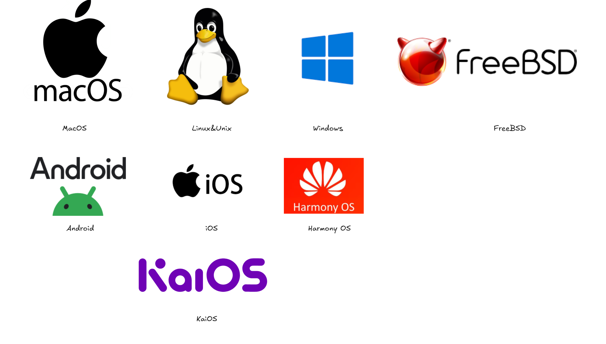
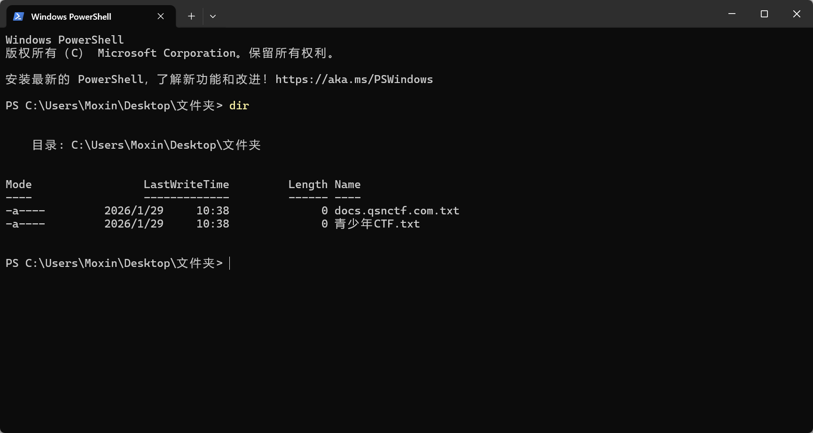
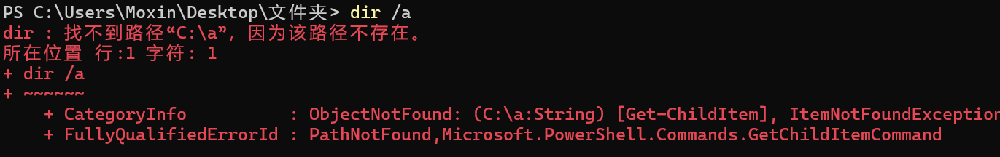
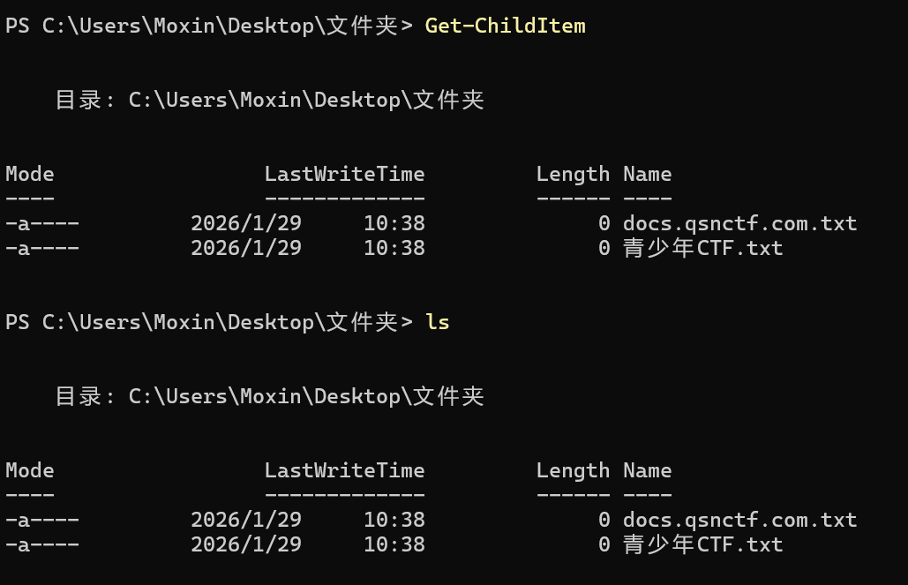
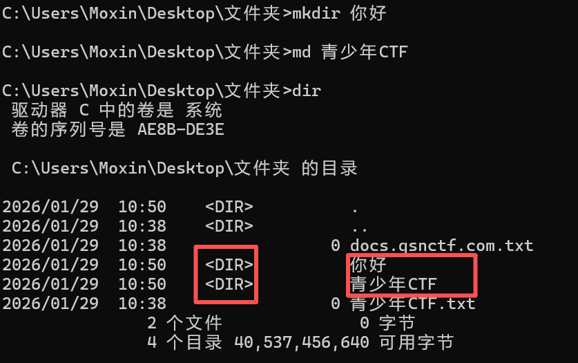
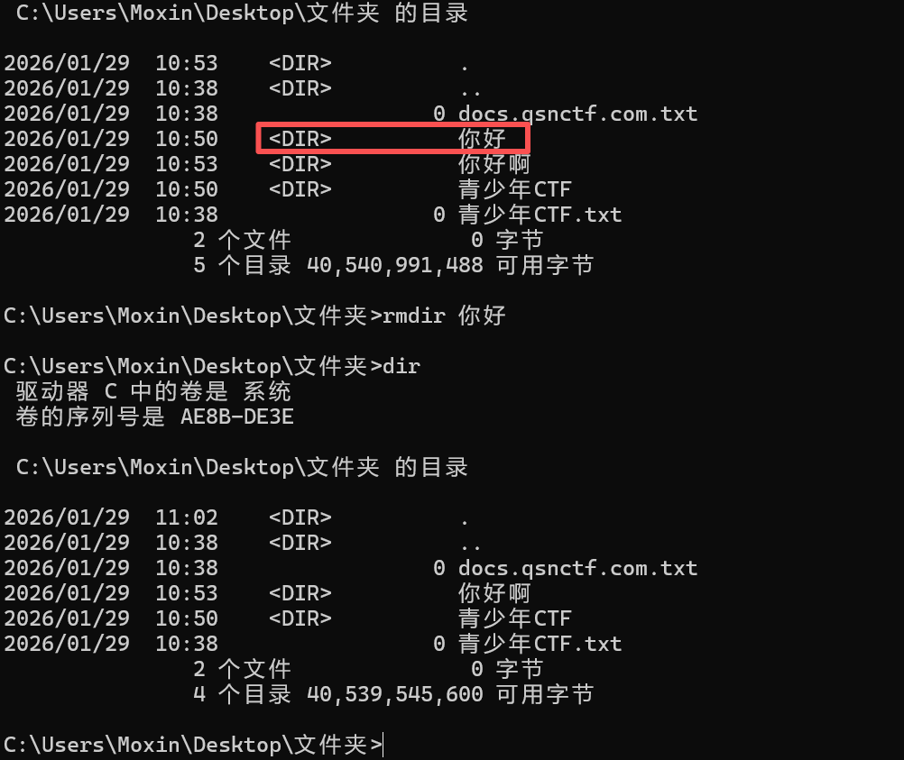

操作系统
什么是操作系统？¶
操作系统（Operating System，简称 OS）是计算机系统中最基本、最核心的软件，它起到 管理硬件资源和提供应用程序运行环境 的作用。
1. 功能角度¶
操作系统是 管理和协调计算机硬件与软件资源的系统软件 。它负责：
- 硬件管理：CPU、内存、硬盘、外设等。
- 进程管理：创建、调度、终止程序执行。
- 存储管理：文件系统、磁盘空间分配。
- 设备管理：驱动外设、输入输出控制。
- 用户接口：提供命令行或图形界面，方便用户操作计算机。
2. 系统角度¶
操作系统是 介于硬件与应用程序之间的桥梁 ：
- 硬件提供原始计算能力和物理资源。
- 操作系统把这些资源抽象化、统一化，让应用程序不必直接操作硬件。
- 应用程序通过操作系统调用（system call）使用硬件功能。
3. 抽象角度¶
操作系统可以看作 “资源管理器” 或 “虚拟机” ：
- 资源管理器：高效分配 CPU 时间、内存空间、外设等资源。
- 虚拟机：给应用程序提供一个统一、简化的运行环境，使程序运行与底层硬件无关。
简明定义¶
操作系统是管理计算机硬件与软件资源，为用户和应用程序提供统一、方便的运行环境的系统软件。
操作系统的分类¶

1.按用户分类¶
桌面/个人电脑操作系统（PC）
- Windows（如 Windows 10、11）
- macOS（苹果电脑）
- Linux 桌面版（如 Ubuntu、Fedora、Debian）
移动设备操作系统
- Android
- iOS
- HarmonyOS（华为）
- KaiOS（功能机常用）
2.按内核类型分类¶
- 单内核/宏内核（Monolithic kernel）
- Linux、Windows NT 内核
- 微内核（Microkernel）
- QNX、Minix、L4 系列
- 混合内核（Hybrid kernel）
- Windows NT、macOS 的 XNU 内核
3.按使用场景分类¶
服务器操作系统
- Windows Server、Ubuntu Server、Red Hat Enterprise Linux
嵌入式操作系统
- FreeRTOS、VxWorks、RTEMS
实时操作系统（RTOS）
- 用于航空航天、工业控制，如 QNX、RTEMS
分布式操作系统
- 如 Google Fuchsia、Plan 9
4.按授权方式分类¶
专有/商业操作系统
- Windows、macOS、iOS
开源操作系统
- Linux、FreeBSD、OpenBSD、Android（AOSP 版本）
Windows系统命令¶
在Windows下，按下【Win徽标键】+【R】可以打开运行窗口，输入程序名称可以快速打开。

如上图所示，输入CMD后回车，即打开了命令提示符。

cd命令（通用）¶
cd 是 change directory（切换目录） 的缩写，用于在 命令行（Linux、Mac、Windows 的命令提示符/PowerShell）中切换当前工作目录。
可以使用“绝对路径”、“相对路径”及一些快捷方式。
绝对路径¶
绝对路径 是从根目录（如Windows下是C:\、Linux和MacOS是/）开始，完整描述文件或文件夹位置的路径。它不依赖于当前工作目录，在任何位置都能唯一确定目标。
相对路径¶
相对路径 是以当前工作目录为基准，描述目标位置的路径。它省略了从根目录到当前目录的部分，只描述从当前目录到目标的路径。
快捷方式¶
cd ~ → 回到当前用户的主目录
cd - → 回到上一次所在的目录
cd 或 cd ~ → 在 Linux/Mac 下也能直接返回用户主目录
Windows的特殊情况¶
Windows 的路径分隔符是反斜杠 \，但大部分命令行也支持正斜杠 /。
切换盘符需要先输入盘符：
小技巧¶
小技巧
使用 pwd（Linux/Mac）或 cd（Windows）可以显示当前路径。
使用 Tab 键可以 自动补全文件夹名，避免拼写错误。
查看目录文件¶
dir命令¶
dir命令是传统Windows命令，在CMD中可用，在PowerShell也是可以用的。
基本用法¶

常用参数¶

注意事项¶
常用参数中，在PowerShell环境下会报错

这是因为dir 在 PowerShell 里其实是 Get-ChildItem，所以参数完全不一样。
| CMD | PowerShell |
|---|---|
dir |
dir / ls / Get-ChildItem |
dir /a |
dir -Force |
dir /s |
dir -Recurse |
dir /w |
dir | Format-Wide |
dir /b |
dir | Select -Expand Name |
dir /a /s /b |
dir -Recurse -Force | Select -Expand FullName |

ls命令¶
ls命令在 PowerShell 中是允许的，但是在PowerShell中，ls 里其实是 别名（alias）
等价于👇

常用用法¶
Powershell与CMD下的查看目录的区别¶
| 对比点 | dir |
ls（PowerShell） |
|---|---|---|
| 环境 | CMD / PowerShell | PowerShell |
| 本质 | 内建命令 | Get-ChildItem 别名 |
| 输出 | 文本 | 对象 |
| 支持管道 | ❌（有限） | ✅ |
| 适合场景 | 临时查看、老脚本 | 自动化、筛选、脚本 |
一个重要的知识¶
在PowerShell中：
它们返回的都是 同一套对象，只是名字不同，方便不同习惯的用户（CMD / Linux）。
👴 老 Windows 用户 / 批处理 → dir
🧠 PowerShell 脚本 / 自动化 / DevOps → ls
🐧 Linux 用户转 Windows → ls（更顺手）
创建目录¶
CMD下的创建目录¶
或

PowerShell下的目录创建¶
推荐写法：

简写：
PowerShell 里的 mkdir / md 是 别名，底层还是 New-Item
创建多级目录：
删除目录¶
CMD下的删除目录¶
⚠️
只能删空目录
或

删除目录+所有子目录和文件：
静默删除：
⚠️
属于危险命令，一旦执行就不能撤销。
PowerShell 下的删除目录¶
默认不能删非空目录：
删除目录 + 内容（等价于 rd /s）：
静默删除：
别名写法：
CMD vs PowerShell 对照表¶
| 操作 | CMD | PowerShell |
|---|---|---|
| 创建目录 | mkdir test |
mkdir test |
| 创建多级目录 | mkdir a\b\c |
mkdir a\b\c |
| 删除空目录 | rmdir test |
Remove-Item test |
| 删除非空目录 | rmdir /s test |
Remove-Item test -Recurse |
| 强制删除 | rmdir /s /q test |
Remove-Item -Recurse -Force |
高危操作¶
⚠️
一定不要乱用下面命令！！！
删除前建议先：
或
查看本机IP地址¶
PowerShell下，可以使用ipconfig，当然也可以使用：
清空输出¶
类似于Linux下的clear
复制文件¶
CMD¶
复制文件¶
复制到目录¶
复制整个目录（必须用 xcopy / robocopy）¶
✅ 推荐新系统直接用
robocopy（更强更稳）
PowerShell¶
复制文件（推荐）¶
复制到目录¶
复制整个目录¶
强制覆盖¶
移动文件¶
CMD¶
移动 / 重命名文件¶
移动目录¶
PowerShell¶
移动 / 重命名¶
移动目录¶
强制覆盖¶
删除文件¶
CMD¶
删除文件¶
静默删除¶
删除多个文件¶
⚠️ del 不能删除目录
PowerShell¶
删除文件¶
删除多个¶
强制删除¶
删除目录 + 内容（高危⚠️）¶
PING连通测试¶
常用参数：
taskkill 结束进程¶
/F：强制结束
/IM：进程名
netstat¶
常用组合：
参数说明：
-a：所有连接-n：数字显示-o：显示 PID
find / findstr（文本查找）¶
CMD：find¶
CMD 推荐：findstr¶
PowerShell（更强）¶
tracert（路由追踪）¶
显示：
- 每一跳路由
- 延迟时间
PowerShell 也能用：
type（查看文件内容）¶
CMD¶
PowerShell（等价但更强）¶
别名：
CMD 特殊符号（⚠️重点）¶
| 符号 | 含义 |
|---|---|
> |
输出重定向（覆盖） |
>> |
追加输出 |
< |
输入重定向 |
| |
|
& |
顺序执行 |
&& |
前一个成功才执行 |
| ` | |
^ |
转义符 |
% |
变量 |
* |
通配符 |
示例¶
PowerShell 符号¶
| 符号 | 作用 |
|---|---|
| |
|
> / >> |
输出到文件 |
$ |
变量 |
* |
通配符 |
? |
单字符通配 |
@() |
数组 |
{} |
代码块 |
() |
表达式 |
$_ |
当前对象 |
; |
分隔命令 |
例子¶
查看8080的端口占用

Linux系统命令¶
目录 / 文件操作¶
touch a.txt # 创建文件
mkdir test # 创建目录
mkdir -p a/b/c # 递归创建
rm a.txt # 删除文件
rm -r test # 删除目录
rm -rf test # 强制删除（⚠️危险）
文件查看 / 编辑¶
cat a.txt # 查看文件
less a.txt # 分页查看（推荐）
more a.txt # 老命令
head a.txt # 前 10 行
tail a.txt # 后 10 行
tail -f app.log # 实时查看日志
复制 / 移动 / 查找¶
# 将文件 a.txt 复制为 b.txt（目标文件不存在则新建，存在则覆盖）
cp a.txt b.txt
# 递归复制目录 src 到 dst（包含 src 目录下的所有文件和子目录）
cp -r src dst # 复制目录
# 将文件 a.txt 移动到目录 dir/ 中（文件名不变）
mv a.txt dir/
# 将文件 a.txt 重命名为 b.txt（本质是一次移动操作）
mv a.txt b.txt # 重命名
文本处理¶
# 在文件 a.txt 中查找包含字符串 "error" 的行
grep "error" a.txt
# 在当前目录（.）及其所有子目录中，递归查找包含字符串 "error" 的文件内容
grep -r "error" .
# 对文件 a.txt 的内容进行排序（按字典序）
sort a.txt
# 去除文件 a.txt 中相邻重复的行（通常先配合 sort 使用）
uniq a.txt
# 统计文件 a.txt 的行数
wc -l a.txt # 行数
uniq 只去掉**相邻重复行**，如果想去掉整个文件中的重复行，通常要先 sort 再 uniq，例如：
# 使用 awk 提取 a.txt 文件的第一列（默认以空格或制表符分隔字段）
awk '{print $1}' a.txt
# 使用 sed 将 a.txt 文件中所有出现的 "old" 替换为 "new"
# s：substitute 替换
# g：全局替换（每行中出现的所有匹配都替换）
sed 's/old/new/g' a.txt
awk非常适合按列处理文本，可以配合条件筛选，例如{print $1, $3}打印第1列和第3列。
sed不修改原文件，如果想直接修改文件需要加-i参数，例如：
权限 / 用户¶
# 设置文件 a.sh 的权限为 755
# 7：所有者读、写、执行（4+2+1）
# 5：所属组读、执行（4+0+1）
# 5：其他用户读、执行（4+0+1）
chmod 755 a.sh
# 给文件 a.sh 添加可执行权限（对所有者、组和其他用户都可执行）
chmod +x a.sh
# 将文件 a.txt 的所有者和所属组都改为 user
chown user:user a.txt
# 显示当前登录用户的用户名
whoami
# 显示当前用户的 UID、GID 以及所属组信息
id
# 切换到另一个用户身份（需要知道该用户密码）
su
# 以超级用户权限执行命令（当前用户需在 sudoers 文件中）
sudo <命令>
进程 / 系统¶
# 显示当前系统中所有进程的详细信息
# ps aux：
# a：显示所有用户的进程
# u：以用户为主显示详细信息
# x：显示没有控制终端的进程
ps aux
# 实时显示系统进程信息、CPU/内存使用情况，动态刷新
top
# 类似 top，但界面更友好、操作更方便（可能需要先安装 htop）
htop # 更好用（可能需安装）
# 终止指定进程（1234 是进程 PID）
kill 1234
# 强制终止指定进程（-9 发送 SIGKILL 信号）
kill -9 1234 # 强制
top 和 htop 都可以动态查看进程，htop 支持上下箭头选择、F9 杀掉进程，比 top 更直观。
kill 默认发送 SIGTERM（15），给进程“优雅退出”的机会；kill -9 是强制杀掉进程，无法让进程清理资源。
网络相关¶
# 显示当前主机的 IP 地址信息（网络接口信息）
ip a
# 查看路由表信息
ip route
# 测试到指定 IP 的连通性（类似 ping）
ping 8.8.8.8
# 查看系统监听的端口及对应的服务
# -l：显示正在监听的套接字
# -n：以数字形式显示地址和端口
# -t：显示 TCP 连接
# -u：显示 UDP 连接
# -p：显示使用该端口的进程 PID/程序名
netstat -lntup # 老命令，但常见
# 测试 HTTP 请求，获取网页内容
curl http://example.com
# 下载文件到本地
wget http://example.com/file
netstat 在新系统中可能被 ss 替代，更快更现代：
curl 适合调试和测试 HTTP 请求，wget 更适合批量下载文件。
磁盘 / 资源¶
压缩 / 解压¶
# 将目录 dir/ 压缩为 tar.gz 格式的归档文件 a.tar.gz
# -c：创建归档
# -z：使用 gzip 压缩
# -v：显示详细过程
# -f：指定归档文件名
tar -czvf a.tar.gz dir/
# 解压 tar.gz 格式的归档文件 a.tar.gz
# -x：解压
# -z：使用 gzip 解压
# -v：显示详细过程
# -f：指定归档文件
tar -xzvf a.tar.gz
# 将目录 dir/ 压缩为 zip 文件 a.zip（递归包含子目录）
# -r：递归处理目录
zip -r a.zip dir/
# 解压 zip 文件 a.zip 到当前目录
unzip a.zip
软件管理（常见发行版）¶
Debian / Ubuntu¶
CentOS / Rocky¶
# 在基于 CentOS / RHEL 7 及之前的系统中，使用 yum 安装 nginx
yum install nginx
# 在基于 Fedora / RHEL 8+ / CentOS 8+ 的系统中，使用 dnf 安装 nginx
dnf install nginx
Linux的常用符号¶
1. 文件路径与通配符¶
| 符号 | 作用 | 示例 |
|---|---|---|
. |
当前目录 | cd . |
.. |
上级目录 | cd .. |
/ |
目录分隔符 | /home/user |
~ |
当前用户主目录 | cd ~ |
* |
通配符，匹配任意字符 | ls *.txt（匹配所有 txt 文件） |
? |
通配符，匹配单个字符 | ls file?.txt（file1.txt、fileA.txt） |
[abc] |
匹配方括号内的任意一个字符 | ls file[12].txt（file1.txt 或 file2.txt） |
{a,b} |
花括号扩展，生成多个字符串 | echo {a,b}.txt → a.txt b.txt |
2. 重定向与管道¶
| 符号 | 作用 | 示例 |
|---|---|---|
> |
输出重定向，覆盖写入文件 | echo hello > a.txt |
>> |
输出重定向，追加写入文件 | echo world >> a.txt |
< |
输入重定向，从文件读数据 | sort < a.txt |
| |
管道，将前一个命令的输出作为下一个命令的输入 | |
2> |
错误输出重定向 | ls /notexist 2> error.log |
&> |
将标准输出和错误输出都重定向 | command &> out.log |
3. 命令执行相关¶
| 符号 | 作用 | 示例 |
|---|---|---|
; |
顺序执行多条命令 | cd /tmp; ls |
&& |
前一条命令成功才执行下一条 | mkdir test && cd test |
| | |
||
& |
后台执行命令 | sleep 60 & |
() |
子 shell 执行命令 | (cd /tmp; ls) |
{} |
命令分组，通常用于重定向 | { echo a; echo b; } > out.txt |
4. 变量与参数¶
| 符号 | 作用 | 示例 |
|---|---|---|
$ |
获取变量值 | echo $HOME |
${} |
获取变量值或做字符串操作 | echo ${USER}_name |
$? |
上一条命令的退出状态 | echo $? |
$0 |
当前脚本名 | echo $0 |
$1, $2… |
脚本位置参数 | echo $1 |
$# |
参数个数 | echo $# |
$* / $@ |
所有参数 | echo $* |
5. 特殊符号¶
| 符号 | 作用 | 示例 |
|---|---|---|
~ |
当前用户家目录 | cd ~ |
. |
当前目录 / source 脚本 | . ./script.sh |
.. |
上级目录 | cd .. |
# |
注释 | # 这是注释 |
\ |
转义字符 | echo "hello\ world" |
| ``` | 命令替换 | echodate |
$() |
命令替换（推荐） | echo $(date) |
! |
历史命令 / 逻辑非 | !ls / [ ! -f a.txt ] |
6. 条件判断与逻辑¶
| 符号 | 作用 | 示例 |
|---|---|---|
-f |
文件存在且为普通文件 | [ -f a.txt ] && echo yes |
-d |
文件存在且为目录 | [ -d /tmp ] && echo yes |
-e |
文件存在 | [ -e a.txt ] && echo yes |
-z |
字符串长度为 0 | [ -z "$var" ] && echo empty |
-n |
字符串长度不为 0 | [ -n "$var" ] && echo not empty |
== / = |
字符串比较 | [ "$a" == "$b" ] |
-eq / -ne / -lt / -le / -gt / -ge |
数值比较 | [ $a -eq $b ] |